[Department and institution] · [Corresponding author email]
Smart agriculture systems can combine plant-image classification, environmental sensing, and satellite observations, but the evidence supporting each module is often uneven. This paper presents SmartAgro as a modular decision-support framework and audits the evidence available for three components: crop-disease image classification, environmental monitoring and rule-based stress categorization, and regional next-day satellite hotspot detection. For disease classification, existing grouped-split summaries cover 16 labels and report 97.61% accuracy and 96.92% macro-F1 for MobileNetV2, compared with 75.75% accuracy and 65.35% macro-F1 for a small convolutional network. These results are internally consistent with the supplied per-class tables but cannot be independently replayed because model checkpoints, image-level predictions, split identifiers, and a run manifest were not retained. Environmental analysis covers three public datasets. A timestamped 101-reading sensor archive is descriptive and has no stress ground truth. Two pump-status datasets yield perfect held-out scores, but one test set contains only two positive examples and the other uses synthetic timestamps with unverified label validity; the scores are therefore exploratory. A preset rule system assigns 97 readings to a low category and four to a high category, which represents rule output rather than diagnosed crop stress. The fire-risk module was replayed from cached NASA FIRMS and NASA POWER data for 54 grid cells in northwestern India during October–November 2017–2023. On a chronological 2022–2023 test set, histogram gradient boosting achieved average precision (AP) 0.872 (95% weekly block-bootstrap interval 0.801–0.913), compared with 0.741 for persistence and test prevalence 0.495. Its intervals overlap those for logistic regression. The target is a next-day satellite detection, not confirmed fire or crop-residue burning. The paper’s contribution is an evidence-audited architecture, reproducible fire benchmark, explicit claims boundaries, and a staged validation plan. The three modules were evaluated separately; end-to-end integration and field validation remain future work.
Keywords: smart agriculture; plant disease classification; environmental monitoring; Internet of Things; active-fire detection; satellite data; evidence audit; decision support
Agricultural decisions depend on observations collected at different scales. A leaf image may help distinguish visible disease symptoms; a sensor may report local temperature, humidity, or soil moisture; and satellite products may reveal thermal anomalies over a wider region. Machine learning and connected sensing offer ways to summarize such observations, but a useful decision-support system must do more than produce a score. It must preserve the origin, time, spatial support, label meaning, and uncertainty of each observation. This is especially important when research prototypes combine datasets that were collected for different purposes.
SmartAgro is considered here as a modular framework with three analytical components. The first classifies images into crop-disease categories. The second summarizes recorded environmental measurements and explores pump-status prediction and threshold-based categories. The third estimates whether a satellite grid cell will contain at least one non-low-confidence VIIRS detection on the following day, using historical hotspot and meteorological features. These components address different questions and operate on different evidence. They are not a single jointly trained model, and the present project does not demonstrate a live, synchronized, end-to-end agricultural deployment.
This distinction matters because apparently strong performance can have narrow meaning. A high image-classification score on a curated image dataset does not establish reliable diagnosis under farm conditions. Perfect pump-status scores from a test set with two positive cases do not establish useful irrigation control. A satellite thermal detection is not equivalent to a confirmed fire, and observed weather is not a forecast. The aim of this paper is therefore to report the numerical findings and to qualify them according to the data and experimental records available.
The paper makes four bounded contributions. First, it documents a common architecture for three evidence streams while preserving their separate outputs and validation states. Second, it summarizes a 16-class plant-image benchmark from available grouped-split result files and records what is missing for independent reproduction. Third, it evaluates three public environmental datasets, exposing class-support, timestamp, sensor-scale, and ground-truth limitations that affect interpretation. Fourth, it reproduces the regional fire-risk pipeline from cached satellite and weather inputs, compares it with simple baselines, and reports both ranking and operating-point metrics. The work is an evidence-audited case study, not a claim of a first system or a newly invented learning algorithm.
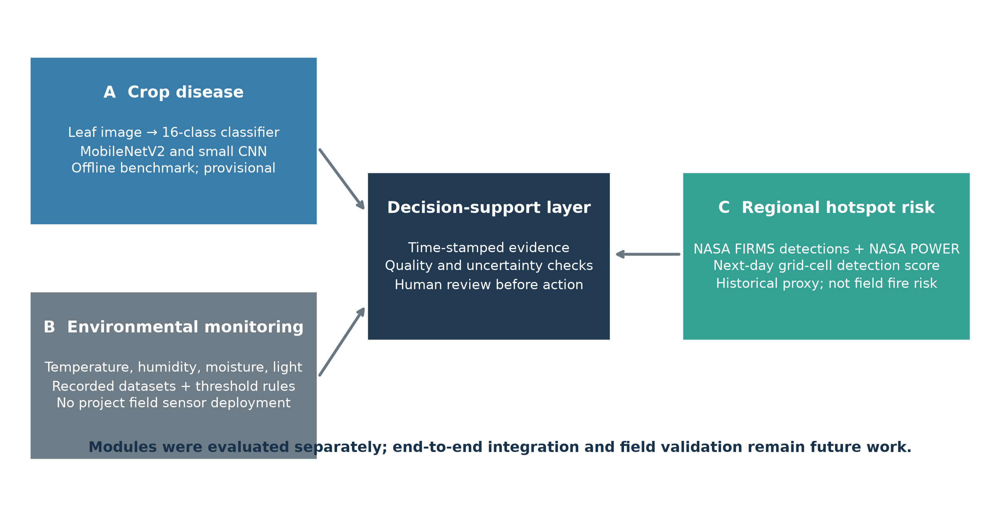
The research questions are: (RQ1) What does the available grouped-split disease benchmark show, and which artifacts are necessary to reproduce it? (RQ2) What can the selected environmental records support about sensor conditions, pump labels, and rule-generated categories? (RQ3) How well do historical weather and satellite features rank next-day hotspot detections in a chronological regional test? (RQ4) What additional work is required before module outputs can responsibly inform agricultural action?
| Module | Evaluated target | Evidence status | Interpretation boundary |
|---|---|---|---|
| Crop disease | 16 image labels | Reported summaries; run not independently replayed | No field validation; missing checkpoints, predictions, and exact split manifest |
| Environmental | Sensor descriptions, rule categories, pump labels | Descriptive and exploratory | Short/heterogeneous datasets; two positives in one test; synthetic time in another; no stress ground truth |
| Regional hotspot | Next-day VIIRS detection in a grid cell | Primary pipeline replayed from local cache | Detection proxy; observed weather; no crop mask or spatial holdout |
Deep convolutional networks have been widely applied to plant-image classification. Mohanty, Hughes, and Salathé (2016) demonstrated strong results on the PlantVillage collection and discussed the possibility of smartphone-assisted diagnosis. Their study helped establish plant disease recognition as a practical computer-vision research direction, while subsequent work has emphasized that controlled images and in-field images differ in background, lighting, viewpoint, occlusion, and symptom severity. The PlantDoc dataset was introduced to support detection and classification in more realistic images (Singh et al., 2020). Reviews of agricultural deep learning describe a broad range of tasks and recurring concerns around dataset diversity, deployment, and external validation (Kamilaris & Prenafeta-Boldú, 2018; Liakos et al., 2018).
MobileNetV2 uses inverted residual blocks and linear bottlenecks to reduce computation while retaining useful representation capacity (Sandler et al., 2018). This makes it a reasonable transfer-learning baseline for resource-constrained applications, but its use does not by itself establish suitability for a particular crop or device. Evaluation design is equally important. Related or near-duplicate photographs split across training and test partitions can inflate apparent generalization. Grouping visually similar images before partitioning is a useful precaution, though grouped cross-validation and a locked, external test set are needed for stronger estimates of transfer to new acquisition conditions.
Internet of Things (IoT) systems can collect environmental measurements and transmit them to local or remote analytics. Smart-farming reviews describe applications spanning crop monitoring, irrigation, livestock, and farm logistics, while identifying interoperability, data quality, connectivity, and validation as practical challenges (Wolfert et al., 2017). Soil-water decisions depend on crop, soil, root depth, weather, and management context. Reference methods such as FAO-56 describe evapotranspiration and crop-water requirements from physical and agronomic variables (Allen et al., 1998). A single universal moisture threshold is therefore not a substitute for crop- and site-specific calibration.
Pump-status prediction is also distinct from irrigation recommendation. A model can reproduce a recorded actuator label because it learns a controller policy, a sensor artifact, or a deterministic relation in the source data. To establish agronomic utility, evaluation needs a credible label definition, prospective observations, comparison with a defensible baseline, and outcomes such as water use, crop response, or reliability. The environmental datasets used here support a limited analysis of recorded values and labels; they do not form a controlled field trial.
NASA’s Fire Information for Resource Management System (FIRMS) distributes active-fire products derived from satellite thermal observations. VIIRS detections provide spatially explicit observations of thermal anomalies; they are useful for situational awareness but can include non-fire heat sources, miss obscured or short-lived events, and do not encode cause. The VIIRS 375 m active-fire product was designed to improve detection of relatively small fires compared with coarser satellite products (Schroeder et al., 2014). NASA POWER provides meteorological variables at point locations and daily temporal resolution, but its standard daily values use local solar time unless another time basis is requested. Combining daily products with detections recorded by acquisition date requires an explicit temporal alignment rule.
Fire occurrence is sparse and spatially and temporally structured. Precision–recall analysis is informative when the positive class is not dominant, and average precision should be interpreted relative to the test-set prevalence (Saito & Rehmsmeier, 2015). Random row-level validation can yield optimistic results when nearby observations are dependent. Roberts et al. (2017) discuss cross-validation strategies for structured ecological data and recommend validation designs that reflect the intended prediction setting. This study uses a chronological test period and a weekly block bootstrap for uncertainty, while acknowledging that the spatial grid cells remain represented across the temporal splits.
SmartAgro organizes evidence into three module-specific paths. The disease path receives a leaf image, applies image normalization and a classifier, and returns a class score for review. The environmental path ingests timestamped sensor rows, checks units and missingness, computes descriptive or derived features, and returns either a pump-label estimate or a transparent rule category. The regional fire path combines historical hotspot detections with daily weather covariates for each grid cell and returns a probability ranking for next-day detection. The intended integration layer is responsible for provenance, timestamps, spatial identifiers, confidence, and escalation to human review.
The integration layer is a design proposal. The analyzed modules use separate datasets, labels, time scales, and evaluation protocols. No experiment joins a disease prediction, sensor measurement, and fire score into one decision. In particular, the disease output is not conditioned on local weather; the public environmental records are not synchronized with the satellite grid; and the fire model has no crop-field mask. Figure 2 shows a conservative operational sequence that would be needed in a future implementation.
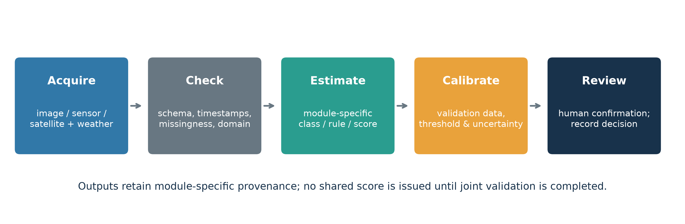
The intended users are agricultural researchers, extension staff, or farm operators who need concise evidence summaries. The present manuscript does not claim that its outputs are already safe or sufficiently calibrated for autonomous pesticide, irrigation, or fire-response decisions. Such actions can have financial, environmental, or safety consequences and require validation with the relevant crop, location, equipment, and operating procedures.
We separated evidence into three statuses. “Reproduced” means that the result was regenerated from locally cached source inputs and matched the stored experiment output under the specified pipeline. “Reported, not independently reproduced” means that a checked-in result table is internally coherent but the artifacts needed to rerun the experiment are absent. “Exploratory” means that the records permit descriptive or limited predictive calculations but their sample size, label validity, timestamp structure, or measurement semantics do not support a strong generalization claim. These statuses apply to the evidence available in this project, not to the underlying algorithms in general.
For the disease task, the evidence consists of grouped-split per-class CSV summaries for two classifiers. We checked the class support totals and the reported aggregate scores against those per-class summaries. We did not infer numeric confusion-matrix counts from image files because the supplied images lack a numeric matrix and color scale. The project tree contains a PlantVillage-style image collection, but the available disease outputs do not provide a complete class-selection manifest or the saved predictions and checkpoints needed to independently retrain and compare the reported run.
For environmental data, we inspected the published dataset documentation and local preprocessing, stress-rule, and model-evaluation outputs. We retained source units and timestamp caveats. For fire risk, we replayed the feature-building and primary histogram-gradient-boosting model from cached FIRMS and POWER inputs and confirmed that the test average precision matched the stored result to numerical precision. Source manifests and derivative summaries are included with the paper assets.
The reported benchmark covers 16 crop-disease or healthy-leaf labels, with 3,563 summed test examples in each supplied grouped-split per-class summary. The checked-in experiment script describes an image workflow with 128-pixel inputs, six training epochs, batch size 32, random seed 0, horizontal flipping, small rotations, and brightness variation. Its small convolutional network contains three convolution/pooling stages with 32, 64, and 128 filters followed by global average pooling, a 128-unit dense layer, and dropout. The transfer-learning model uses ImageNet-pretrained MobileNetV2 with the backbone frozen and global average pooling. Both are configured with Adam and sparse categorical cross-entropy.
These are script defaults and describe the intended or checked-in pipeline; they cannot be proven to be the exact settings used to produce the available CSV files because the run manifest and training checkpoint are missing. Likewise, the code includes perceptual-hash grouping and grouped split utilities, but the exact image-level split assignments for the supplied result files are unavailable. We therefore label the reported scores as grouped-split summaries rather than claiming a fully reproducible retraining result. Accuracy, macro-F1, weighted-F1, and per-class precision/recall/F1 are appropriate descriptive measures; macro-F1 gives each class equal weight and is useful when supports vary.
Three public sources were examined. The Howlader and Priyanka dataset contains 960 timestamped observations over 20 days at 30-minute intervals and includes temperature, humidity, soil moisture, light, and pump status. Pump status is off in 932 rows and on in 28. The Kaur, Bhatt, and Raja dataset contains 3,000 rows, with 1,431 off and 1,569 on labels. It does not provide original timestamps; the preprocessing creates synthetic 30-minute playback timestamps. Its soil-moisture values range from approximately 314 to 985 and are retained as source sensor-scale values, not percentages. The SmartAgroTech DY et al. archive consists of six sensor files joined on timestamp, yielding 101 matched rows over about 30 minutes. It includes temperature, humidity, light, soil moisture, pH, and soil temperature but no target label.
| Dataset | Rows / period | Label and key fields | Primary caveat |
|---|---|---|---|
| Howlader & Priyanka (2026) | 960 / 20 days, 30-minute | Pump status; temperature, humidity, moisture, light | Test has only two pump-on rows |
| Kaur et al. (2023) | 3,000 / source timestamps absent | Motor on/off; air temperature, humidity, raw moisture scale | Playback timestamps are synthetic; moisture is not verified percent |
| SmartAgroTech DY et al. (2024) | 101 matched rows / about 30 minutes | Temperature, humidity, moisture, pH, light; no target | Short archive; constant humidity and pH; no stress labels |
Descriptive summaries include sample counts, observed ranges, and rule-generated category counts. Pump models were evaluated using the source project’s chronological partition: the predictive-irrigation test set contains 144 rows (142 off, 2 on), while the motor-monitor test set contains 450 rows (208 off, 242 on). Four classifiers are listed in the original summary; all show perfect metrics. We report those values together with test support and reliability notes. They should be interpreted as exploratory source-label prediction, not evidence of irrigation effectiveness. In the very small positive test class, a single changed prediction would materially alter positive-class estimates.
The rule-based stress function assigns points when soil moisture is below 35% or above 85%, air temperature is at least 35 °C or at most 10 °C, relative humidity is at least 85%, or pH is below 5.5 or above 7.5. Low moisture and high temperature contribute three points; other listed triggers contribute two points. A total of zero is called Normal, 1–2 Low, 3–4 Moderate, and 5 or more High. The cutoffs are fixed defaults in the checked-in script. The archive has no independently labeled stress outcome; accordingly, category counts describe the rule’s behavior only. The exact sensor scale must be verified before interpreting a threshold as a physical percentage.
| Indicator | Trigger | Points | Interpretation |
|---|---|---|---|
| Soil moisture | <35% or >85% | 3 (low); 2 (high) | Threshold proxy; sensor calibration and crop context required |
| Air temperature | ≥35 °C or ≤10 °C | 3 (high); 2 (low) | Fixed defaults, not a crop-specific diagnosis |
| Relative humidity | ≥85% | 2 | Archive humidity is constant at 95% |
| Soil pH | <5.5 or >7.5 | 2 | Archive pH is constant at 6.10 |
| Score category | 0 / 1–2 / 3–4 / ≥5 | — | Normal / Low / Moderate / High; rule output only |
The primary regional pipeline combines NASA FIRMS VIIRS/S-NPP detection records and NASA POWER daily meteorology for a northwestern India bounding region from 74.0°E to 77.6°E and 28.4°N to 32.6°N. The acquisition cache includes 91 five-day FIRMS pulls and 54 POWER point series. After dropping low-confidence detections and deduplicating records, the source summary contains 445,482 hotspot records over 455 acquisition dates. The modeling subset uses October and November from 2017 through 2023 and a 0.5° × 0.625° grid of 54 cells, producing 23,058 cell-day rows before chronological partitioning.
The binary outcome is one when at least one non-low-confidence VIIRS/S-NPP detection is recorded in a grid cell on the next day. It is a satellite-detection proxy rather than verified fire occurrence, cause, crop-residue burning, or field-level risk. Candidate predictors are daily 2 m temperature, 2 m relative humidity, 10 m wind speed, precipitation, three-day precipitation, dry-day count, same-day detections, previous three- and seven-day detections, day of year, latitude, and longitude. The split is chronological: 2017–2020 training (13,176 rows; 6,984 positive), 2021 validation (3,294; 1,805 positive), and 2022–2023 test (6,588; 3,264 positive; prevalence 0.4954).
| Partition | Years | Cell-days | Positive labels | Positive rate |
|---|---|---|---|---|
| Training | 2017–2020 | 13,176 | 6,984 | 53.0% |
| Validation | 2021 | 3,294 | 1,805 | 54.8% |
| Test | 2022–2023 | 6,588 | 3,264 | 49.5% |
Baselines are prior-day persistence, day-of-season climatology, and a simple hot/dry/windy index. Primary models are logistic regression and histogram gradient boosting. The decision threshold is selected on the 2021 validation period to target 80% cumulative recall and is then applied to the 2022–2023 test set. Average precision is the principal threshold-independent score. Ninety-five percent uncertainty intervals are estimated with a weekly block bootstrap to retain some short-range temporal dependence. This interval does not account for spatial dependence between neighboring cells. Random forest and XGBoost values from a separate fixed-0.5-threshold comparison are retained as auxiliary descriptive results, not as a matched operating-point comparison.
Weather fields are observed/reanalysis-style daily covariates, not operational forecasts. NASA POWER daily fields default to local solar time, while FIRMS acquisition dates are UTC-based; the available pipeline does not explicitly normalize these time conventions before joining. This can create alignment error. The same cells appear in all temporal periods, and no spatially held-out region is tested. These choices support a chronological within-region comparison but do not establish transfer to a new region or prospective forecasting performance.
For the fire model, we report AP, precision, recall, missed-event rate (1 minus recall), false alarms per 100 negative cell-days, alert share, and Brier score at the validation-selected operating threshold. AP summarizes the precision–recall curve and should be considered alongside prevalence. For disease, reported aggregate scores are accuracy and macro-F1, with per-class values shown. Environmental pump metrics are presented with class support and reliability context. We do not convert perfect pump scores or rule categories into agronomic efficacy estimates.
Reproducibility assets include copied source result tables, derived CSVs used in figures, figure-generation code, a source-file hash manifest, and a description of the deterministic fire replay. Raw PlantVillage images and the non-commercial motor-monitor data are not redistributed. The disease model’s checkpoint, exact split indices, and per-image probabilities were not present in the inspected project outputs; the associated results therefore remain unverified at run level. Data provenance and all claim boundaries are summarized in the accompanying audit and checklist.
The available grouped-split CSV tables report MobileNetV2 accuracy of 97.61% and macro-F1 of 96.92%. The small CNN reports 75.75% accuracy and macro-F1 of 65.35%. Both tables sum to 3,563 test instances across the 16 labels. Class-level F1 values show that the MobileNetV2 result is consistently higher for most labels, while the small CNN has uneven performance across categories. The aggregate difference is large in the supplied summaries, but no paired confidence interval or external test result is available.
| Model | Test support | Accuracy | Macro-F1 | Evidence note |
|---|---|---|---|---|
| MobileNetV2 | 3,563 | 97.61% | 96.92% | CSV summary; not independently replayed |
| Small CNN | 3,563 | 75.75% | 65.35% | CSV summary; not independently replayed |
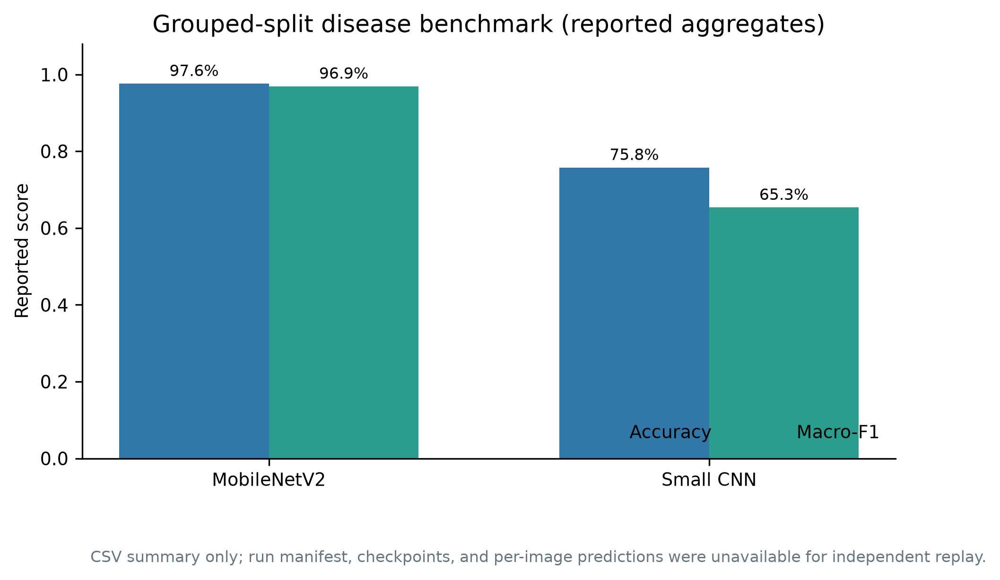
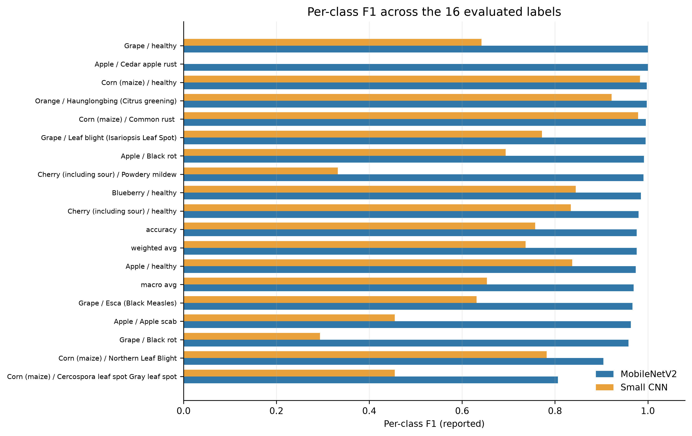
The local image tree contains 38 class directories and 54,305 image files, whereas the reported result tables cover 16 labels. The selection rule connecting the full tree to the benchmark is not recorded in a run manifest. This discrepancy, together with the absence of split IDs and checkpoints, constrains interpretation. A faithful rerun should publish the exact label list, image hashes, duplicate groups, split assignments, preprocessing pipeline, software versions, training logs, and per-example predictions. The current evidence supports a comparison of reported summaries, not a claim that the model has already achieved a deployable diagnostic accuracy.
The 101-row SmartAgroTech archive spans a short period and has no missing values after timestamp matching. Air temperature ranges from 26.10 to 26.90 °C, relative humidity remains at 95%, pH remains at 6.10, and soil temperature varies only from 18.10 to 18.20 °C. Soil-moisture values span 0.91–64.22 on the supplied percentage scale, with a mean of 60.96; the unusually low value is retained rather than silently removed. These observations describe the archive and do not establish seasonal or field-wide sensor behavior.
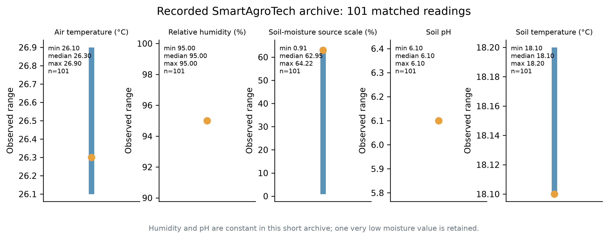
The preset rule function assigns 97 readings to Low stress and four to High stress; no rows fall into Normal or Moderate categories in this archive. The persistent high-humidity trigger contributes points to every row, while the small number of very low moisture readings push some totals into the High category. Since no independent stress annotation exists, the result should be read as a transparent count of rule outcomes, not a physiological diagnosis.
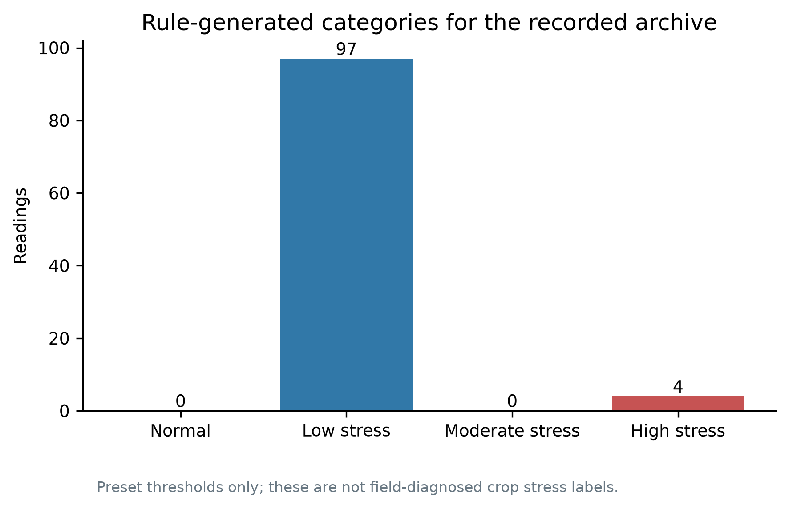
On the 144-row predictive-irrigation test split, all four reported classifiers have accuracy, macro-F1, ROC-AUC, and PR-AUC of 1.00. Yet only two test rows have pump-on labels. This small positive support prevents a credible estimate of sensitivity across operating conditions. A model that identifies those two points can achieve a perfect score while remaining uncertain about rare pump activations not represented in the test sample. The test contains 142 off and two on observations, and five-fold time-respecting audit folds contain only a handful of positive examples.
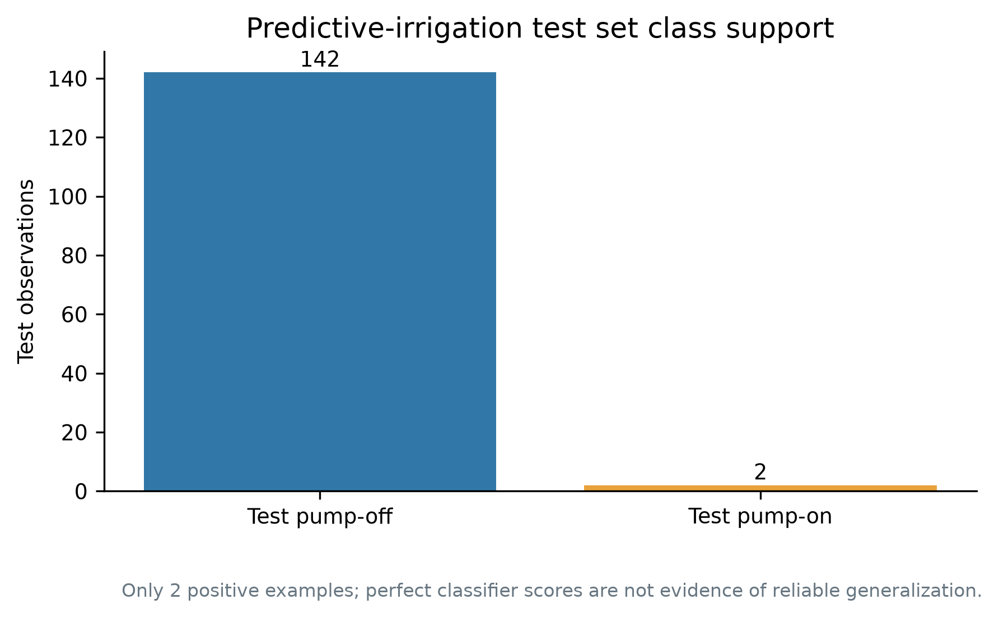
The 3,000-row motor-monitor dataset is more balanced and its held-out test set contains 208 off and 242 on labels. Reported classifiers again produce perfect scores. These results remain exploratory because the source has no original timestamps, the local preprocessing synthesizes a time axis, the soil-moisture field is a raw scale from roughly 314 to 985 rather than a percentage, and the source label-generating process is not independently validated. Strong associations between source features and the pump label may reflect a deterministic or simulated control rule. Neither dataset evaluates irrigation water savings, crop outcomes, equipment reliability, or causal benefit.
The October–November modeling subset spans 54 grid cells and seven years. Detection counts vary across years and months, which supports reporting the temporal scope rather than treating the full 445,482-record cache as the model sample. Figure 8 visualizes October and November detections by acquisition year. Figure 9 shows the cell-level share of modeled days followed by a detection; spatial differences may reflect fire activity, observation conditions, and detection opportunity, and cannot be interpreted as crop-specific risk.
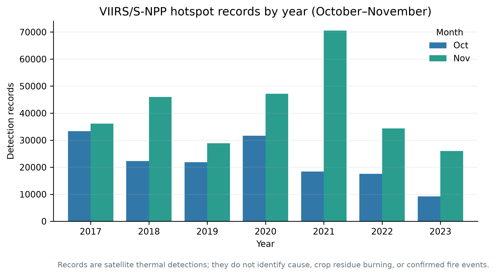
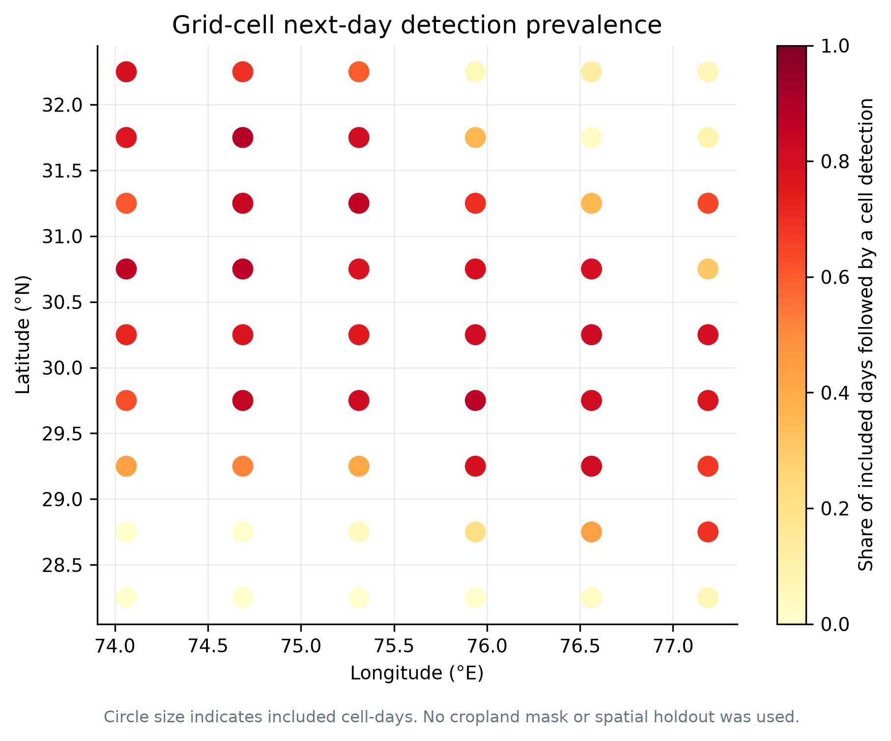
On the chronological 2022–2023 test set, histogram gradient boosting obtains AP 0.8723 (95% weekly block-bootstrap interval 0.8013–0.9131). Logistic regression obtains AP 0.8530 (0.7972–0.8936), and persistence obtains AP 0.7409 (0.6901–0.7817). Day-of-season climatology obtains 0.5452 (0.5006–0.5776); the hot/dry/windy heuristic obtains 0.4369 (0.3888–0.4791). Test prevalence is approximately 0.4954. The logistic and gradient-boosting intervals overlap, so the results do not establish a decisive ranking between those two learned models. The performance of the simple weather index is below prevalence in this implementation.
| Model | AP | 95% weekly block-bootstrap interval | Comparison |
|---|---|---|---|
| Persistence (previous-day detection) | 0.741 | 0.690–0.782 | Simple baseline |
| Day-of-season climatology | 0.545 | 0.501–0.578 | Near test prevalence |
| Hot/dry/windy heuristic | 0.437 | 0.389–0.479 | Below test prevalence |
| Logistic regression | 0.853 | 0.797–0.894 | Interval overlaps GBT |
| Histogram gradient boosting | 0.872 | 0.801–0.913 | Highest primary estimate; no decisive ranking over logistic regression |
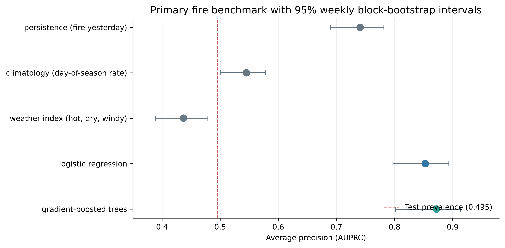
At the operating threshold selected on the 2021 validation period to target 80% cumulative recall, the gradient-boosted model reaches test precision 0.837 and recall 0.732, with a missed-event rate of 0.268, 14.02 false alarms per 100 negative cell-days, 43.34% of cell-days alerted, and Brier score 0.1285. Logistic regression has precision 0.850, recall 0.700, a missed-event rate of 0.300, 12.09 false alarms per 100 negative cell-days, a 40.79% alert share, and Brier score 0.1346. The threshold is not tuned on the test set. These operating characteristics illustrate a tradeoff between missed detections and alert volume; they do not define a suitable operational threshold for a fire service or farm manager.
| Model | Precision | Recall | Missed-event rate | False alarms / 100 negatives | Alerts | Brier |
|---|---|---|---|---|---|---|
| Logistic regression | 0.850 | 0.700 | 0.300 | 12.09 | 40.79% | 0.1346 |
| Histogram gradient boosting | 0.837 | 0.732 | 0.268 | 14.02 | 43.34% | 0.1285 |
Auxiliary fixed-0.5-threshold comparisons report AP 0.8842 for random forest and 0.8757 for XGBoost, alongside 0.8723 for histogram gradient boosting and 0.8530 for logistic regression. Figure 11 displays these values separately. The auxiliary comparison lacks bootstrap intervals and uses a different threshold protocol for threshold-dependent measures. Although AP itself is threshold-independent, the auxiliary runs do not have equivalent uncertainty reporting or a validation-selected operating point. We therefore do not infer that the random forest is definitively superior.
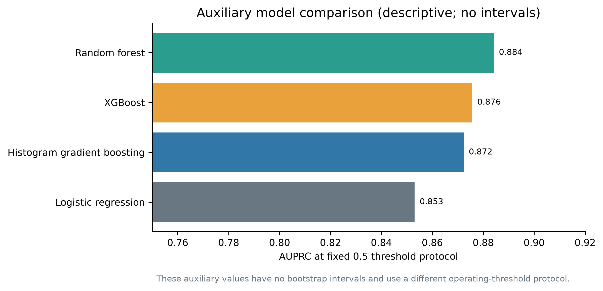
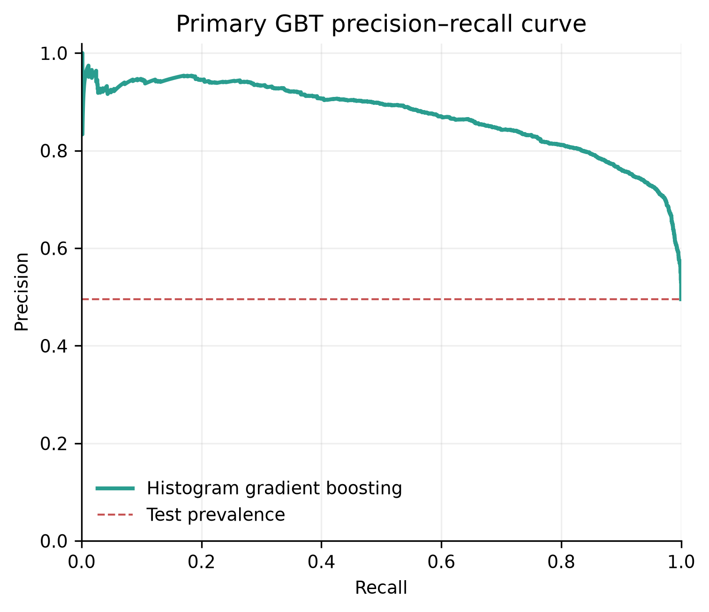
The disease summaries suggest that the transfer-learning model performs better than the small CNN on the supplied 16-class grouped-split benchmark. This is consistent with the broad value of pretrained visual representations, but it does not quantify real-world diagnostic reliability. In curated leaf datasets, image backgrounds and acquisition practices can be simpler than field scenes. Before presenting a disease class to a grower as actionable, evaluation should include independent farms, cameras, seasons, and symptom stages; calibration; and a mechanism for abstaining when the image is out of distribution. The absence of the split manifest prevents auditing whether grouping fully prevented related samples from crossing partitions.
The environmental results are useful primarily as a data-quality and feasibility audit. The 101-reading archive demonstrates that several channels can be joined and summarized, while also exposing constant readings, short coverage, and a potentially influential low moisture value. A transparent threshold rule is easy to explain and inspect, yet its categories inherit the assumptions of the thresholds. Without crop, soil, sensor-calibration, and stress labels, “High stress” describes a rule boundary rather than a validated plant condition. Likewise, pump prediction estimates agreement with the source labels. It does not tell us whether the action was agronomically correct or resource-efficient.
The fire benchmark provides the strongest reproducible model comparison in this project because the primary result was replayed from cached inputs. It shows that weather and recent detection history rank next-day satellite detections better than the tested persistence and climatology baselines in the selected region and season. The improvement is meaningful as a computational result but bounded by the label: the model predicts future detections within a historical observation system. Operational usefulness depends on forecast-quality weather inputs, spatially explicit exposure data, lead time, and user-specific costs of misses and false alarms. The observed-weather evaluation is not a prospective forecast.
Combining the modules into a single “farm risk score” would hide important differences. Disease probabilities refer to an image and a curated label set. Environmental rules refer to local sensor readings and chosen cutoffs. Fire scores refer to a coarse grid cell and a satellite-derived target. Their labels are not commensurate, and their times and locations may not align. A single scalar without provenance could imply a common calibration that has not been measured.
A responsible future integration can instead use a common record format with module name, input source, measurement time, spatial extent, prediction target, score, uncertainty, model version, and known limitations. A dashboard may display each result in a separate panel, flag stale or low-quality inputs, and request human review before action. Joint recommendations should be considered only after module outputs are validated independently and an integrated study establishes how combinations affect decision quality.
For research teams, the immediate value is a concrete evidence inventory: it identifies which scores are in files, which results have been replayed, and which assumptions are still unverified. For instructors and evaluators, it offers a defensible viva narrative: SmartAgro is a prototype framework; the fire benchmark is reproducible within a regional historical dataset; disease metrics are reported but not fully replayable; and environmental classifications are exploratory. For potential users, the present outputs are suitable for demonstrating analytical workflows, not for unsupervised treatment or resource allocation.
The project also illustrates how negative or qualified findings improve scientific communication. Reporting the two positive examples in one test set, the synthetic timestamps in another, constant channels in the sensor archive, and overlapping fire-model uncertainty intervals makes the results more interpretable. This information allows readers to distinguish a result that is computationally high from evidence that is externally valid.
The disease benchmark covers 16 labels, while the local image tree contains 38 class folders. The inclusion rule is undocumented, and the source collection may contain images with shared acquisition context. No field images, independent farm test set, or expert adjudication is available in the result package. Per-class support and aggregate tables do not replace example-level review. The reported scores should not be generalized to other crops, devices, or environments.
The public environmental datasets were not collected as a unified validation campaign. Their sampling periods, sensors, labels, and licenses differ. The predictive-irrigation test has only two positive labels; the motor-monitor timestamps are synthetic; its moisture scale is not a verified percent; and the smart-garden sensor archive provides no ground-truth stress label. The 101-row archive is short and has constant humidity and pH. Fixed thresholds may be inappropriate for specific cultivars, growth stages, soils, or sensor calibration. Dataset-level perfect scores may reflect the label construction or deterministic control patterns.
The fire target is a VIIRS detection on the next day. It can omit small, obscured, short-lived, or below-threshold fires and can include thermal sources unrelated to crop burning. No incident verification, crop mask, land cover filter, or fire-cause label is available. The region and months were selected for the analysis and do not represent a national sample. Meteorological point series are used as cell-level covariates and may not capture local conditions.
The disease metrics cannot be independently reproduced from the checked-in CSVs alone. Exact run settings may differ from script defaults; a saved environment lock file, model checkpoint, predictions, and split identifiers are missing. We did not calculate confidence intervals for the disease scores because paired predictions are unavailable. Environmental test sets are too limited or semantically uncertain for strong claims. A threshold-rule count cannot be treated as a classifier evaluation without independent labels.
For fire, the chronological split is appropriate for a within-region forward-in-time test, but each grid cell is represented in training, validation, and test years. The result therefore does not test spatial transfer. Weekly bootstrap blocks address some serial correlation but not dependence among neighboring cells. The use of observed daily weather rather than forecasts creates an optimistic information setting for real-time prediction. The join between local-solar-time meteorology and UTC-based acquisition dates may misalign features and outcomes. These concerns should be addressed before operational interpretation.
No live IoT hardware deployment, streaming pipeline, mobile application, or end-to-end user study is evaluated in this paper. The architecture is a proposed organization of modules rather than a demonstrated integrated system. Resource use, latency, network reliability, sensor calibration drift, privacy, model updating, and human factors have not been benchmarked. Results should be viewed as a research prototype audit and a reproducibility exercise.
The next research stage should be organized around evidence gaps rather than adding more model complexity. For disease classification, retain an immutable image manifest and duplicate groups, publish exact train/validation/test membership, retrain with a fixed environment, save per-image probabilities, and add an external field-image set annotated by qualified reviewers. Report calibration and class-specific uncertainty, and evaluate an abstain option. Keep a locked test set untouched until the pipeline is frozen.
For environmental monitoring, verify units and sensor calibration against reference instruments, preserve original timestamps and metadata, and collect a longer period across locations and growth stages. Define stress outcomes with agronomic protocols and record pump-control logic. For predictive irrigation, split by time and site, compare against a transparent controller and agronomic baseline, and measure water applied, crop response, and failure modes prospectively. Rule thresholds should be selected with domain experts and validated against independent stress labels.
For the fire component, align timestamps explicitly, test forecast weather rather than observations, add land-cover or crop masks if the intended target is agricultural burning, and validate hotspot labels against independent incident or burn-scar records. Add spatially held-out evaluation and report both temporal and spatial transfer. Select an operating point from stakeholder-defined miss and false-alarm costs. Calibration and decision-curve analysis should accompany discrimination metrics. Finally, a joint SmartAgro pilot should define what each module contributes, how missing or stale inputs are handled, and what human action follows each output.
This paper presents SmartAgro as a modular framework linking crop-image classification, environmental monitoring, and regional satellite hotspot analysis. The evidence audit finds three different levels of support. Disease result files report strong grouped-split performance for MobileNetV2, but the exact experiment cannot be independently replayed from the retained artifacts. Environmental records support descriptive summaries and exploratory pump-label analysis, but small positive support, synthetic timestamps, uncertain sensor scales, and absent stress ground truth limit interpretation. The fire-risk pipeline is reproducible from cached source data and shows higher AP for learned models than simple baselines on a chronological regional test; the target remains next-day satellite detection and the confidence intervals for logistic regression and gradient boosting overlap.
The central conclusion is methodological: results should travel with their provenance and limits. SmartAgro can serve as a useful research prototype and a foundation for controlled validation, but the three modules have not yet been integrated or validated in agricultural field use. Future work should prioritize complete experiment records, external data, calibrated outputs, spatial and temporal validation, and prospective human-reviewed trials.
The public environmental datasets are cited by their persistent Mendeley Data records in the reference list. The manuscript package includes aggregate result tables and derived CSVs used to make the figures, together with a source manifest containing input paths and SHA-256 digests. The primary fire benchmark can be reconstructed from the project’s local FIRMS and POWER cache using the fire experiment code and the included figure-generation script. The package does not redistribute the PlantVillage image archive or the Kaur et al. motor-monitor source files; users should obtain those materials from their source records and follow the stated license terms. The motor-monitor dataset is marked CC BY-NC 3.0, which restricts commercial reuse. A full independent replay of disease training requires project artifacts that were not retained, including the exact split manifest, trained checkpoints, and image-level outputs.
This study analyzes secondary, public or project-local datasets and reports no intervention on crops, animals, or human participants. The available files do not contain personal identifiers. That scope does not remove the need to use predictions carefully: incorrect disease labels may lead to unnecessary treatment, pump recommendations can affect water use and crop health, and false fire alerts can divert limited response resources. For those reasons, all outputs in this work are presented as research evidence for human review. Operational use requires local calibration, an explicit abstention path, prospective assessment, and approval under applicable agricultural and emergency-response procedures.
Allen, R. G., Pereira, L. S., Raes, D., & Smith, M. (1998). Crop evapotranspiration: Guidelines for computing crop water requirements (FAO Irrigation and Drainage Paper No. 56). Food and Agriculture Organization of the United Nations. https://www.fao.org/4/x0490e/x0490e00.htm
Howlader, M. N., & Priyanka, F. T. Z. (2026). Environmental Sensor Dataset for LSTM-Based Predictive Irrigation in Smart Home Gardening Using Edge IoT [Data set]. Mendeley Data. https://doi.org/10.17632/jtsyb593fy.1
Kamilaris, A., & Prenafeta-Boldú, F. X. (2018). Deep learning in agriculture: A survey. Computers and Electronics in Agriculture, 147, 70–90. https://doi.org/10.1016/j.compag.2018.02.016
Kaur, A., Bhatt, D. P., & Raja, L. (2023). Soil Moisture, Air temperature, humidity, and Motor on/off Monitoring data [Data set]. Mendeley Data. https://doi.org/10.17632/fpdwmm7nrb.1
Liakos, K. G., Busato, P., Moshou, D., Pearson, S., & Bochtis, D. (2018). Machine learning in agriculture: A review. Sensors, 18(8), 2674. https://doi.org/10.3390/s18082674
Mohanty, S. P., Hughes, D. P., & Salathé, M. (2016). Using deep learning for image-based plant disease detection. Frontiers in Plant Science, 7, 1419. https://doi.org/10.3389/fpls.2016.01419
NASA Fire Information for Resource Management System. (n.d.). Active fire data and fire information for resource management. Retrieved November 20, 2026, from https://firms.modaps.eosdis.nasa.gov/
NASA Prediction Of Worldwide Energy Resources. (n.d.). POWER data access viewer and daily API documentation. Retrieved November 20, 2026, from https://power.larc.nasa.gov/docs/services/api/temporal/daily/
Roberts, D. R., Bahn, V., Ciuti, S., Boyce, M. S., Elith, J., Guillera-Arroita, G., Hauenstein, S., Lahoz-Monfort, J. J., Schröder, B., Thuiller, W., Warton, D. I., Wintle, B. A., Hartig, F., & Dormann, C. F. (2017). Cross-validation strategies for data with temporal, spatial, hierarchical, or phylogenetic structure. Ecography, 40(8), 913–929. https://doi.org/10.1111/ecog.02881
Saito, T., & Rehmsmeier, M. (2015). The precision-recall plot is more informative than the ROC plot when evaluating binary classifiers on imbalanced datasets. PLOS ONE, 10(3), e0118432. https://doi.org/10.1371/journal.pone.0118432
Sandler, M., Howard, A., Zhu, M., Zhmoginov, A., & Chen, L.-C. (2018). MobileNetV2: Inverted residuals and linear bottlenecks. In Proceedings of the IEEE Conference on Computer Vision and Pattern Recognition (pp. 4510–4520). https://doi.org/10.1109/CVPR.2018.00474
Schroeder, W., Oliva, P., Giglio, L., & Csiszar, I. A. (2014). The New VIIRS 375 m active fire detection data product: Algorithm description and initial assessment. Remote Sensing of Environment, 143, 85–96. https://doi.org/10.1016/j.rse.2013.12.008
Singh, D., Jain, N., Jain, P., Kayal, P., Kumari, S., & Jain, N. (2020). PlantDoc: A dataset for visual plant disease detection. In Proceedings of the 7th ACM IKDD CoDS and 25th COMAD (pp. 249–253). https://doi.org/10.1145/3371158.3371196
SmartAgroTech DY, Kathole, A. B., Patil, S., Mohite, H., Kadam, G., Jawale, A., & Solapure, V. (2024). Smart Agriculture and Plant Health Monitoring using IoT [Data set]. Mendeley Data. https://doi.org/10.17632/65jxyrxv7b.1
Wolfert, S., Ge, L., Verdouw, C., & Bogaardt, M.-J. (2017). Big data in smart farming—A review. Agricultural Systems, 153, 69–80. https://doi.org/10.1016/j.agsy.2017.01.023